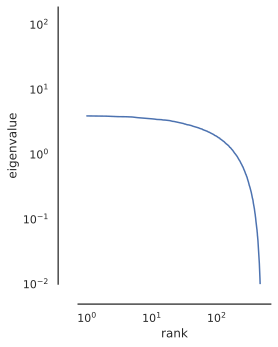
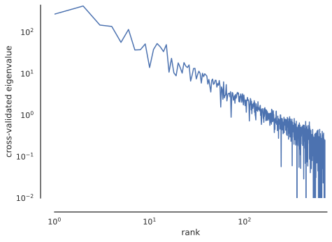

Install all required dependencies
# TODO uncomment before final packaging
# %pip install git+https://github.com/BonnerLab/ccn-tutorial.gitHere’s a link to this notebook on Google Colab.
Unfortunately for us computational neuroscientists, experimental data is noisy. Let’s consider a neuron from the toy example we discussed earlier.
# TODO uncomment before final packaging
# %pip install git+https://github.com/BonnerLab/ccn-tutorial.gitfrom collections.abc import Sequence
import functools
import warnings
from typing import NamedTuple
import numpy as np
import pandas as pd
import xarray as xr
from sklearn.decomposition import PCA
import seaborn as sns
from matplotlib.figure import Figure
from matplotlib import pyplot as plt
from matplotlib.colors import SymLogNorm
from matplotlib_inline.backend_inline import set_matplotlib_formats
import ipywidgets as widgets
from IPython.display import display
from utilities.brain import load_dataset
from utilities.computation import assign_logarithmic_bins
from utilities.toy_example import (
Neuron,
create_stimuli,
simulate_multiple_neuron_responses,
view_individual_scatter,
)%matplotlib inline
sns.set_theme(
context="notebook",
style="white",
palette="deep",
rc={"legend.edgecolor": "None"},
)
set_matplotlib_formats("svg")
pd.set_option("display.max_rows", 5)
pd.set_option("display.max_columns", 10)
pd.set_option("display.precision", 3)
pd.set_option("display.show_dimensions", False)
xr.set_options(display_max_rows=3, display_expand_data=False)
warnings.filterwarnings("ignore")random_state = 0
rng = np.random.default_rng(seed=random_state)The variance in its responses to the N = 1000 presented dots was driven by two factors:
stimuli = create_stimuli(n=1000, rng=rng)
neurons = {
"neuron response": Neuron(beta_color=3, beta_size=-2, std=1, mean=7),
"stimulus-dependent signal": Neuron(beta_color=3, beta_size=-2, std=0, mean=7),
"stimulus-independent noise": Neuron(beta_color=0, beta_size=0, std=1, mean=0),
}
data = simulate_multiple_neuron_responses(
stimuli=stimuli,
neurons=neurons.values(),
rng=np.random.default_rng(random_state),
)
view_individual_scatter(
data,
coord="neuron",
dim="neuron",
template_func=lambda x: f"{list(neurons.keys())[x - 1]}",
)
variances = np.round(data.var("stimulus").values, 3)
print(f"total variance: {variances[0]}")
print(f"stimulus-dependent signal variance: {variances[1]}")
print(f"stimulus-independent noise variance: {variances[2]}")total variance: 14.245
stimulus-dependent signal variance: 13.106
stimulus-independent noise variance: 0.964When investigating a sensory system, we are typically interested in the former – we want to understand the robust, reproducible portion of the system’s behavior in response to stimuli. The remaining variance is often considered nuisance variance.
In general, experimental data in neuroscience contain many sources of variation, some intrinsic to the system and others dependent on our experimental techniques.
In the previous notebook, we observed that neural responses have high-dimensional structure, as evidenced by the covariance spectrum obtained from principal component analysis.
However, this covariance spectrum is agnostic to the sources of variation in the data: it considers variance due to signal and noise to be identical. How can we use the spectrum to separate signal from noise?
Let’s take a brief detour and investigate a system that is “pure noise”: a random matrix.
Let’s consider a simple system: a random matrix X \in \mathbb{R}^{N \times P}, with entries drawn independently from a fixed Gaussian distribution \mathcal{N}(0, \sigma^2).
n_stimuli = 500
n_neurons = 500
random_matrix = rng.standard_normal((n_stimuli, n_neurons))
def view_random_matrix(data: np.ndarray, /) -> Figure:
fig, ax = plt.subplots()
image = ax.imshow(
data, cmap="Spectral", norm=SymLogNorm(linthresh=1e-2, linscale=1e-1)
)
fig.colorbar(image)
sns.despine(ax=ax, left=True, bottom=True)
ax.set_xticks([])
ax.set_yticks([])
plt.close(fig)
return fig
view_random_matrix(random_matrix)We might expect that a random matrix ought to have no covariance structure, since all the entries were sampled independently. However, this isn’t the case! In fact, random matrices have well-defined covariance structure that is described by the Marchenko-Pastur distribution.
def view_eigenspectrum(data: np.ndarray, *, log: bool = False) -> None:
data -= data.mean(axis=-2, keepdims=True)
singular_values = np.linalg.svd(data, compute_uv=False)
eigenvalues = (
xr.DataArray(
name="eigenvalue",
data=singular_values**2 / (n_stimuli - 1),
dims=("rank",),
coords={"rank": ("rank", 1 + np.arange(singular_values.shape[-1]))},
)
.to_dataframe()
.reset_index()
)
fig, ax = plt.subplots()
sns.lineplot(
ax=ax,
data=eigenvalues,
x="rank",
y="eigenvalue",
estimator="mean",
errorbar="sd",
err_style="band",
)
if log:
ax.set_xscale("log")
ax.set_yscale("log")
ax.set_ylim(bottom=1e-2)
ax.set_aspect("equal", "box")
sns.despine(ax=ax, offset=20)
fig.show()
view_eigenspectrum(random_matrix)Let’s view the spectrum on a logarithmic scale to see what it looks like.
view_eigenspectrum(random_matrix, log=True)
Even random matrices have systematic covariance structure that result in non-zero eigenvalues at all ranks. How can we know that a region of our spectrum is driven by signal and not noise?
One of the most common denoising procedures is variance-dependent dimensionality reduction: retaining only the first few high-variance principal components of the data. The implicit assumption here is that high-variance dimensions correspond to signal in the system, while low-variance dimensions represent noise. In this section, we’ll investigate this assumption and demonstrate that this isn’t always true!
In a whole-brain calcium-imaging study, Stringer et al. (2019) recorded the responses of 10,000 neurons in mouse primary visual cortex to 2,800 natural images.

Armed with this large dataset, they set out to develop a method that could reliably estimate the covariance structure of these neural responses: cross-validated PCA.
Since most neuroscience experiments collect multiple responses to the same stimulus across different trials, Stringer et al. (2019) decided to use one set of responses as a training set and other as a test set when computing the covariance eigenspectrum.
Specifically, if there were N unique stimuli – each seen twice – the data matrix X \in \mathbb{R}^{2N \times P} is split into two matrices X_\text{train} \in \mathbb{R}^{N \times P} and X_\text{test} \in \mathbb{R}^{N \times P}, where the rows of X_\text{train} and X_\text{test} correspond to the same stimuli.
The first step is to compute the principal components – the eigenvectors of the covariance matrix – of the training set:
\begin{align*} \text{cov}(X_\text{train}, X_\text{train}) &= X_\text{train}^\top X_\text{train} / (n - 1)\\ &= V \Lambda V^\top \end{align*}
The second step is to compute cross-validated eigenvalues by projecting both the training and the test sets onto the eigenvectors from Step 1, and computing their cross-covariance:
\begin{align*} \Lambda_\text{cross-validated} &= \text{cov}(X_\text{train}V, X_\text{test}V)\\ &= \left( X_\text{train} V \right) ^\top \left( X_\text{test} V \right) / (n - 1) \end{align*}

These cross-validated eigenvalues represent the covariance reliably shared across two presentations of the visual stimulus – the “stable” part of the visual representation of a natural image.
These cross-validated “eigenvalues” need not be positive: if there is no shared covariance between the two systems along a particular eigenvector, the expected value of the eigenvalue is 0. This makes interpretation simple: if there is reliable variance along a dimension, its cross-validated eigenvalue will be significantly above zero.
class CrossValidatedPCA:
def __init__(self) -> None:
return
def __call__(self, /, x: np.ndarray, y: np.ndarray) -> np.ndarray:
self.pca = PCA()
self.pca.fit(x)
x_transformed = self.pca.transform(x)
y_transformed = self.pca.transform(y)
cross_covariance = np.cov(
x_transformed,
y_transformed,
rowvar=False,
)
self.cross_validated_spectrum = np.diag(
cross_covariance[: self.pca.n_components_, self.pca.n_components_ :]
)Let’s apply cross-validated PCA to our fMRI data to see what it looks like!
data = load_dataset(subject=0, roi="general").load()
display(data)<xarray.DataArray 'fMRI betas' (presentation: 1400, neuroid: 15724)>
-0.2375 -0.4001 -0.7933 0.04382 -0.1157 ... 0.2669 -1.051 -0.179 0.03348 -0.2664
Coordinates: (3/8)
x (neuroid) uint8 12 12 12 12 12 12 12 ... 71 72 72 72 72 72 72
y (neuroid) uint8 21 22 22 22 22 22 23 ... 34 29 29 30 30 30 31
... ...
rep_id (presentation) uint8 0 0 0 0 0 0 1 0 0 0 ... 0 0 1 1 1 1 1 1 1
Dimensions without coordinates: presentation, neuroid
Attributes: (3/7)
resolution: 1pt8mm
preprocessing: fithrf_GLMdenoise_RR
... ...
citation: Allen, E.J., St-Yves, G., Wu, Y. et al. A massive 7T fMRI...Note that the data contain fMRI responses to two repetitions of N = 700 images for a total of 2N = 1400 presentations.
data_repetition_1 = data.isel({"presentation": data["rep_id"] == 0}).sortby(
"stimulus_id"
)
data_repetition_2 = data.isel({"presentation": data["rep_id"] == 1}).sortby(
"stimulus_id"
)
cv_pca = CrossValidatedPCA()
cv_pca(data_repetition_1.values, data_repetition_2.values)def plot_cross_validated_spectrum(
cv_pca: CrossValidatedPCA,
*,
log: bool = False,
original: bool = False,
square: bool = False,
bin_logarithmically: bool = False,
) -> Figure:
fig, ax = plt.subplots()
data = pd.DataFrame(
{
"rank": 1 + np.arange(len(cv_pca.cross_validated_spectrum) - 1),
"cross-validated": cv_pca.cross_validated_spectrum[:-1],
"original": cv_pca.pca.explained_variance_[:-1],
}
).melt(
id_vars=["rank"],
value_vars=["cross-validated", "original"],
value_name="eigenvalue",
var_name="spectrum",
)
if original:
sns.lineplot(
ax=ax,
data=data,
x="rank",
y="eigenvalue",
hue="spectrum",
)
else:
data = (
data.loc[data["spectrum"] == "cross-validated"]
.rename(columns={"eigenvalue": "cross-validated eigenvalue"})
.drop(columns="spectrum")
)
if bin_logarithmically:
data["rank"] = assign_logarithmic_bins(
data["rank"], points_per_bin=5, min_=1, max_=10_000
)
sns.lineplot(
ax=ax,
data=data,
x="rank",
y="cross-validated eigenvalue",
marker="o",
dashes=False,
ls="None",
err_style="bars",
estimator="mean",
errorbar="sd",
)
else:
sns.lineplot(
ax=ax,
data=data,
x="rank",
y="cross-validated eigenvalue",
)
if log:
ax.axhline(0, ls="--", c="gray")
ax.set_xlim(left=1)
ax.set_ylim(bottom=1e-2)
ax.set_xscale("log")
ax.set_yscale("log")
if square:
ax.axis("square")
sns.despine(ax=ax, offset=20)
plt.close(fig)
return fig
plot_cross_validated_spectrum(cv_pca)We can see a typical spectrum that appears to have a knee somewhere around 10 dimensions, beyond which the variance quickly flattens out close to zero.
Let’s re-plot this cross-validated covariance eigenspectrum on a logarithmic scale.
plot_cross_validated_spectrum(cv_pca, log=True)
Here, we see that the apparent knee isn’t present – in fact, the spectrum appears to obey a power law at all ranks! Additionally, since these eigenvalues were obtained from a cross-validated analysis, we know that they represent stimulus-related variance that is consistent across different presentations of the same stimuli and not noise.
To verify this, let’s plot the covariance spectrum of the training dataset, the one that we would obtain from regular principal components analysis.
plot_cross_validated_spectrum(cv_pca, log=True, original=True)
The covariance eigenspectrum of the training data (orange) is higher than the cross-validated spectrum (blue) at all ranks – suggesting that the process is indeed removing trial-specific noise.
Importantly, note that after removing trial-specific noise using cross-validated PCA, the covariance eigenspectrum retains its power-law structure at all ranks! This suggests that the neural population code is truly high-dimensional.
Finally, let’s re-plot the cross-validated spectrum in a cleaner fashion, where the trends of interest are more clearly visible.
with sns.axes_style("whitegrid"):
fig = plot_cross_validated_spectrum(
cv_pca, log=True, bin_logarithmically=True, square=True
)
ax = fig.get_axes()[0]
ax.grid(True, which="minor", c="whitesmoke")
ax.grid(True, which="major", c="lightgray")
for loc in ("left", "bottom"):
ax.spines[loc].set_visible(False)
display(fig)Here, we’ve averaged the spectrum in local bins that expand exponentially in size (and thus appear uniformly spaced on the logarithmic scale). The individual points denote the mean cross-validated eigenvalue in each bin while the error bars denote the standard deviation of these eigenvalues.
Averaging within such bins allows us to detect signal even in a regime where the cross-validated spectrum oscillates wildly near zero and also visualize the power law more cleanly.
Note that the power-law scaling doesn’t saturate at the tail of the spectrum, suggesting that with even larger datasets with more stimuli, we might find reliable stimulus-specific variance along even more dimensions! In fact, if we use a larger version of this dataset – including all 10,000 images seen by a single participant – we do indeed see continued power law scaling.
The power-law exponent of the neural data appears very close to -1, as you can see from the slope of the cross-validated spectrum Interestingly, a power-law exponent of -1 appears with surprising regularity in neuroscience.
A power-law index of -1 implies a special sort of scale-invariance. Consider the total variance captured by such a covariance eigenspectrum within a range of ranks [\alpha, \beta]:
\begin{align*} \int_\alpha^\beta x^{-1} dx &= \ln{\left\lvert\frac{\beta}{\alpha}\right\rvert} \end{align*}
This total variance only depends on the ratio \beta / \alpha – indicating that a power law with a -1 slope has equal variance in each decade: i.e., the total variance from rank 1 to rank 10 is equal to the total variance from rank 100 to rank 1000.
This suggests that each decade is equally important and contributes as much to the representation, though the later decades have their variance spread out over many more dimensions.
Stringer et al. (2019) provide a possible explanation for why systems might tend toward a -1 covariance eigenspectrum.
For sufficiently high-dimensional data, if a spectrum decays any slower than -1, the representational manifold becomes non-smooth: small changes in the input might lead to large changes in the representational space – clearly an undesirable property for stable perception and cognition.
In contrast, if a spectrum decays significantly faster than -1, it loses some expressivity by not utilizing all the dimensions it has available.
Stringer et al. (2019), who developed cross-validated PCA, discovered that mouse primary visual cortex responses obey a power-law with exponent -1 over several orders of magnitude.
More recently, Wang et al. (2023) reported a similar result from whole-brain calcium recordings in zebrafish during hunting and spontaneous behavior.
Interestingly, several recent results from the machine learning literature also corroborate this result!
Specifically, Agrawal et al. (2022) report that neural networks whose internal representations have a covariance spectrum that decays as a power law with index -1 perform better. This has made the power law index a statistic of interest for assessing model representation quality – and perhaps a target of direct optimization.
In addition, Kong et al. (2022) demonstrated that more adversarially robust neural networks are a better match for macaque V1 eigenspectra.
In this notebook, we have demonstrated that a similar scale-invariant covariance structure underlies human visual representations of natural scenes too!
with sns.axes_style("whitegrid"):
display(fig)In this notebook, we described a cross-validated approach to isolate stimulus-specific variance and used it to demonstrate the high-dimensional latent structure of neural population responses. Understanding such a high-dimensional code must involve studying reliable information along all dimensions.
Do we observe the same power-law covariance spectra in other organisms? Could it be a universal statistical property of neural population codes? Do all sensory systems use a high-dimensional population code – where an expressive representation of the outside world might allow rapid learning and generalization to various ethological tasks? Perhaps more cognitive systems might use low-dimensional representational formats to enhance robustness and invariance to irrelevant features.